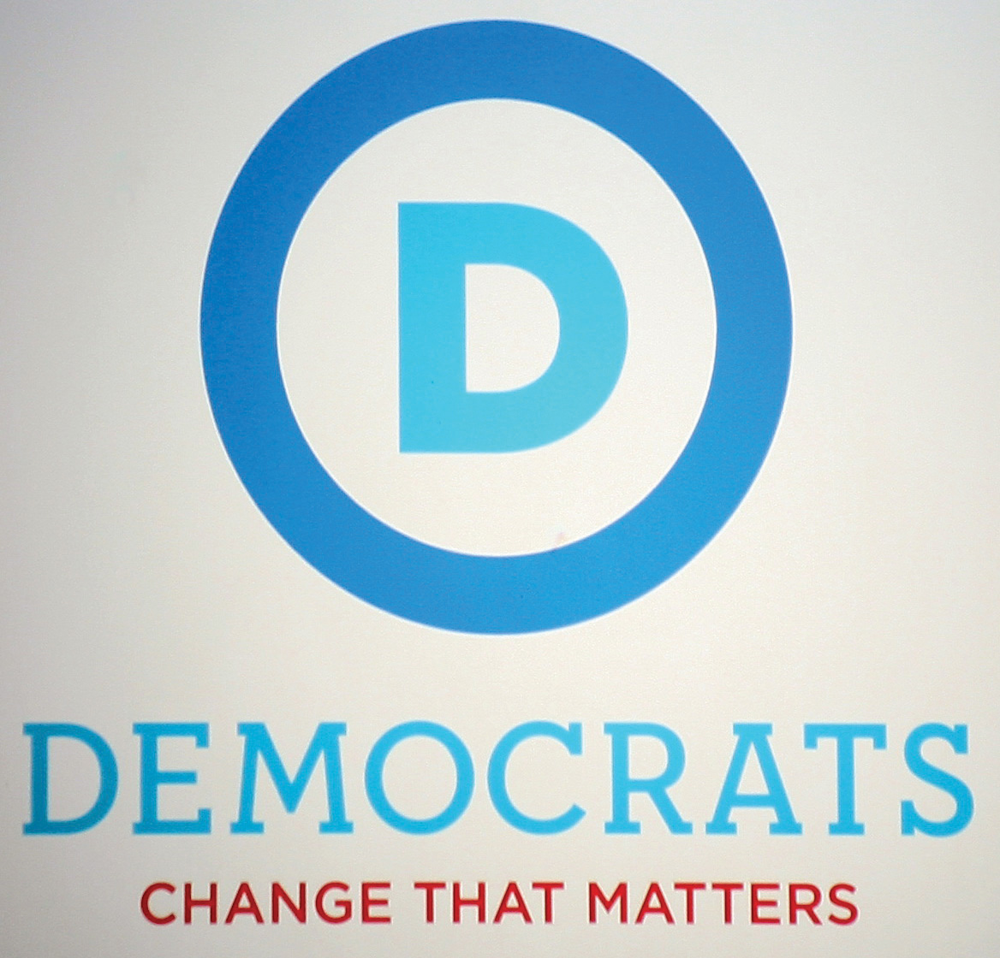
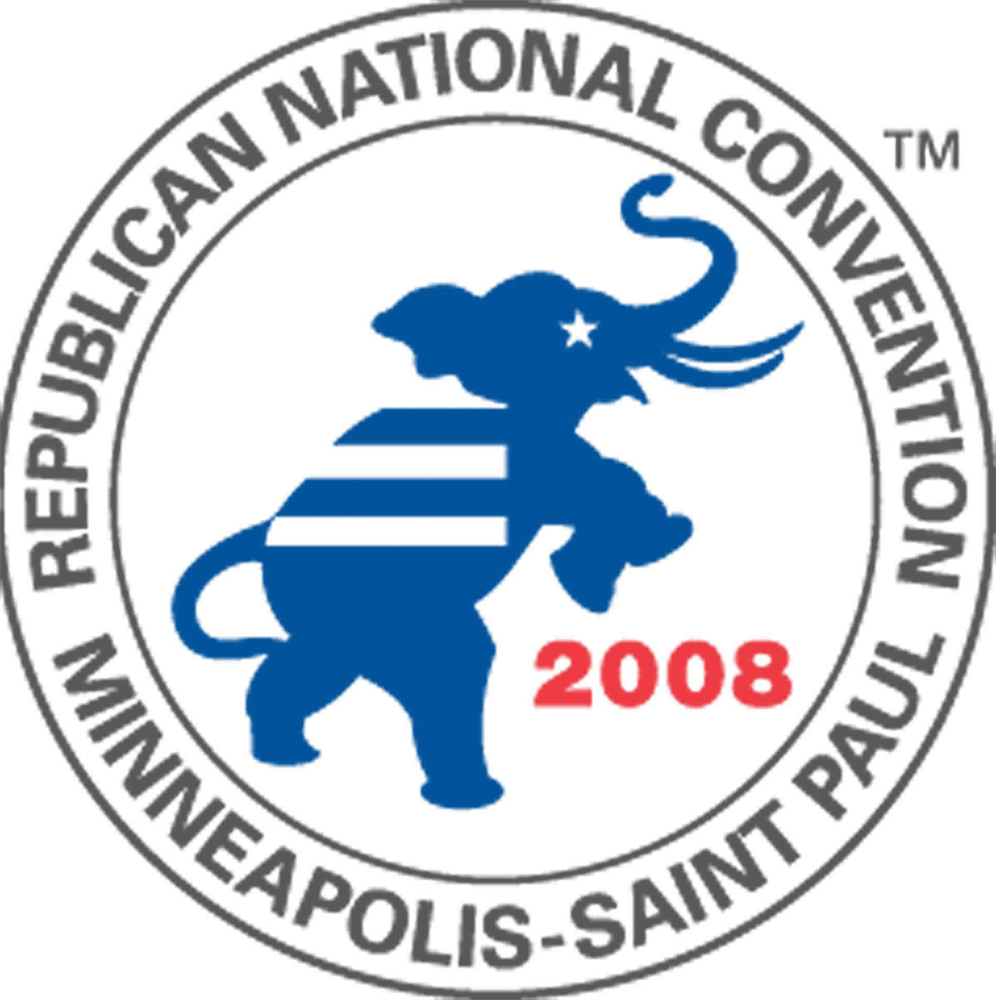

After reading this section, you should be able to answer the following questions:
Political parties thrive when they are able to manage the media and effectively promote their candidates, leaders, and causes. Their goal is to use the media to publicize policy positions, activities, and leaders. Party organizations launch media blitzes and provide technical communications assistance to campaigns and government officials so that they can attract media attention. They also use media to inform and mobilize their loyalists. Media depictions tend to be dramatic, emphasizing infighting among party members as well as conflicts between different parties.
Political parties are obsessed with keeping their names and representatives in the public eye. Publicity gives the impression that the party is active and influential. A party with a strong media presence can attract volunteers and financial contributors. Parties use a variety of tactics in their efforts to control the media agenda and get their message out to the public and to journalists. They employ many of the same tactics as interest groups, such as holding news conferences, issuing press releases, giving interviews to journalists, and appearing on television and radio talk shows. Democratic and Republican officials provide competing commentary about issues. Party leaders participate in “spin sessions” to get their views heard. Parties engage in aggressive advertising campaigns. Finally, they maintain significant web and digital media presences to reach their supporters and to court the press.
Political parties seek to influence political debate on a daily basis by confronting the opposition in the media. They engage in spinThe practice of providing an interpretation of events or issues that favors a particular side, such as the Democratic or Republican party., the practice of providing an interpretation of events or issues that favors their side. High-profile partisans make the rounds of political talk programs such as Meet the Press, and news shows and give interviews to print journalists to spin their views. Partisan spin doctors routinely appear on television immediately following candidate debates or major speeches to interpret what has been said and to recast any misstatements.Stephen Bates, The Future of Presidential Debates (Boston: Joan Shorenstein Barone Center on the Press, Politics and Public Policy, 1993). Spin doctors can be elected leaders, party officials, or interest group leaders. In 2011, Republican Congressman Paul Ryan and Washington Governor Gary Locke provide opposing commentary on the State of the Union address by President Barack Obama. Minnesota Congresswoman Michele Bachmann gave the Tea Party spin on the address via webcast.
Specific media outlets are associated with spin doctors who favor a specific party. Conservative talk radio host Rush Limbaugh favors the Republican Party and draws a large audience. Liberal talk show hosts such as MSNBC’s Rachel Maddow tend to support Democrats. The Fox News Network hosts spin doctors such as Bill O’Reilly, who calls his program a “no-spin zone” despite its constant promotion of Republican and conservative causes.
Political advertising is a way for parties to disseminate messages without having them filtered by journalists. Parties engaged extensively in issue advocacyAdvertising campaigns that focus on legislative policies., advertising campaigns that focus on legislative policies. They also develop ads supportive of their candidates and leaders and critical of the opposition. Online video is a cost-effective alternative to television advertising, although many more people are reached through TV ads than via online ads.
The Democratic and Republican parties feature online ads on their YouTube channels, which makes them readily available to supporters as well as journalists.
Next to You: The Ihle Family
http://www.youtube.com/user/DemocraticVideo
RNC Launches YouTube Contest
Party websites offer a vast amount of information to average citizens, political activists, and journalists who take the initiative to visit them. Websites provide an effective mechanism for communicating information to citizens and can lessen the administrative burden on party organizations. They reach a large number of people instantaneously and have become more effective mechanisms for raising funds than the earlier method of direct mail. The sites include general political information, such as facts about American democracy and party history. Press releases, platforms, and position papers give the lowdown on issues and candidates. Party sites also host discussion boards and blogs where party elites, including candidates, interact with rank-and-file members.Rachael Gibson and Stephen Ward, “A Proposed Methodology for Studying the Function and Effectiveness of Party and Candidate Web Sites,” Social Science Computer Review 18: 301–19. Websites hype symbols that create a sense of identity as well as a party brand. The technical delivery of this content is an important aspect of outreach, so developing e-mail lists of party members, especially visitors to the website, is a priority.
Figure 10.9 Democratic Party’s New Logo and Slogan
The Democratic Party uses its website to promote its logo and Obama-era slogan, “Democrats: Change that Matters.”
Source: Photo courtesy of Cliff, http://www.flickr.com/photos/nostri-imago/4994523865/.
Figure 10.10 Rebulican Party’s Logo
The Republican Party logo features the historic elephant icon that has represented the party since the 1860s.
Source: Used with permission from Getty Images.
The Democratic Party’s and Republican Party’s websites have become sophisticated. In addition to the sites’ content, visitors are offered the opportunity to connect with the party through Facebook, Twitter, YouTube, Flickr, and other social media. Some of the material on Democratic and Republican websites consists of negative, at times vicious, attacks on the opposing party. In 2011, the Republican Party used its website to gain momentum for its quest to win the White House in 2012. Clicking on the link to the Republican National Committee site led directly to page featuring a negative ad against the Obama administration and the opportunity to “Help Fight Back” by donating money. The Democratic National Committee website, which represents the party of the sitting president, focuses heavily on the accomplishments of the Obama administration.
In depicting political parties, the media highlight conflicts between the two major parties and divisions within each party. The press also focuses on the strategies parties employ in their pursuit of political power.
Parties as adversaries is an accurate characterization of one of their primary functions, representing opposing viewpoints and providing platforms for debate. The modern party has been called “a fighting organization.”Robert Michels, Political Parties, ed. Seymour Martin Lipset (1915; New York: Collier Books, 1962), 78. Indeed, parties actively promote this image. Reporters consulting party websites and reading partisan blogs get their fill of negative hyperbole about the opposition.
The press coverage can exaggerate the conflicts between parties by employing sports and war metaphors. Parties often are described as attacking, battling, fighting, jousting, beating, and pummeling one another. This type of media coverage becomes a problem when parties genuinely try to work together while the press continues to frame their relations in conflict terms. When the Republican congressional leadership held a meeting at the White House in 1995 and agreed to work with Democratic President Bill Clinton on public policy, Republican House Speaker Newt Gingrich told reporters that the meeting was “great.” When the press immediately speculated about when the cordial relations would break down, Gingrich reacted by dressing down reporters: “[Y]ou just heard the leaders of the Republican Party say that the Democratic President today had a wonderful meeting on behalf of America; we’re trying to work together. Couldn’t you try for twenty-four hours to have a positive, optimistic message as though it might work?”Joseph N. Cappella and Kathleen Hall Jamieson, Spiral of Cynicism (New York: Oxford University Press, 1997).
Media depictions often focus on the strategies parties use to win elections and control government. The press is obsessed with how the Republicans and Democrats manage their messages to attract or lose supporters.
One strategy typically portrayed by mass media is that parties routinely compromise the public good to achieve self-interested goals. The Democratic Party is continually criticized for catering to organized labor, Hollywood liberals such as Barbara Streisand and Alec Baldwin, and feminists. The Republican Party is chided for favoring conservatives and corporate interests. The press argues that both parties support these privileged groups because they make large financial donations to party organizations and campaigns.
Media depictions suggest that parties fail to live up to campaign promises about policies they will enact if their candidates are elected. A recurring media theme during President Obama’s presidency is that Obama has not represented his party’s interests, such as on the issue of tax cuts. However, press coverage is not consistent with research demonstrating that party leaders keep campaign promises at least two-thirds of the time.Joseph N. Cappella and Kathleen Hall Jamieson, Spiral of Cynicism (New York: Oxford University Press, 1997).
Political parties have had to adapt to a dynamic mass media environment that at times has weakened their position in the political process. The introduction of television in the 1950s allowed candidates and government officials to circumvent parties and take their appeals directly to the public. An example is Nixon’s “Checkers” speechA speech delivered by vice presidential candidate Richard Nixon during the 1952 presidential campaign. The speech was a defense against media reports that he had misused funds given to him by supporters.. Richard Nixon, who was running on a ticket headed by Republican presidential candidate General Dwight D. Eisenhower, had been accused of taking money from campaign supporters. The Republican Party was unhappy with Nixon and considered dropping him from the ticket. To save his political career, Nixon went on television to make his case to the American people by detailing his personal finances and denying any wrongdoing. With his wife, Pat, by his side, Nixon declared that there was one gift from supporters he would not return, a dog named Checkers that had become a beloved family pet. The tactic worked as the public bought into Nixon’s impassioned television appeal. Eisenhower and Nixon went on to win the election.
Nixon’s “Checkers Speech”
(click to see video)A defining moment was the “Checkers” speech delivered by vice presidential candidate Richard Nixon on September 23, 1952.
By the 1980s, party elites had less influence on public opinion than media elites, especially journalists.Nelson Polsby, The Consequences of Party Reform (New York: Oxford University Press, 1983). The press had assumed parties’ responsibility for recruiting candidates, organizing the issue agenda, and informing and mobilizing voters.Thomas E. Patterson, Out of Order (New York: Knopf, 1994). Journalists controlled the amount of publicity parties and candidates received, which contributes to their recognition among voters.
Consultants work directly with candidates to develop media strategies, often leaving parties out of the loop. In his bid for the 2004 Democratic presidential nomination, former governor of Vermont Howard Dean worked with consultants to develop an innovative campaign strategy centered on using the Internet to build a base of online supporters through sites including Meetup.com and MoveOn.org, and to raise funds. The Democratic Party expressed concerns about Dean’s tactics because he ignored the traditional bases of the party’s support, such as environmental activists and other liberal interest groups.Thomas B. Edsall, “Dean Sparks Debate on His Potential to Remold Party,” Washington Post, October 20, 2003. Dean was successful in raising funds on the Internet but was unable to secure the presidential nomination.
Parties responded in the 1990s by developing media strategies to enhance their proficiency as service providers to candidates, officeholders, and voters. They engaged in aggressive fundraising schemes so that they could afford to hire the services of consultants and purchase expensive advertising time on television and space in print publications. Parties have facilities where politicians do on-air television and radio interviews and tape messages for local media markets. They invest heavily in advertising during and between election cycles.
Today, major parties are at the forefront of innovation with communications technology as they seek ways of making the Internet and digital media more effective and exciting for party members. These media efforts have been paying off. Seventy-seven percent of the public believes that political parties are important to them for providing political information.James A. Thurber, Erin O’Brien, and David A. Dulio, “Where Do Voters Get Their Political Information,” Campaigns and Elections, April, 2001, 9. Party advertisements can influence the opinions of up to 4 percent of voters, enough to sway an election, although this does not happen in every contest.Will Lester, “About $1B Spent on Televised Midterm Ads,” Associated Press, December 5, 2002.
Political parties have a double-edged relationship with the media. On the one hand, the press is important for political parties because it publicizes the activities and positions of party organizations, leaders, and candidates, which can build a base of support. On the other hand, media coverage of parties emphasizes conflict and the failure of parties to make good on promises they make about policies. Thus parties are continually revising their strategies as they attempt to garner as much positive coverage and publicity as possible.
Parties need to manage the media and attract sufficient attention to remain viable in the public eye and inform and mobilize their constituents. They interact with journalists by engaging in spin, producing and airing advertisements, hosting websites, and populating social media. Media depictions highlight the conflicts between parties and the strategies they employ to attract voters. Parties have adapted to a changing media environment by developing in-house media facilities to allow candidates and officeholders to communicate with constituents.
Youth Engagement in Political Parties
Political parties provide a gateway to involvement in public affairs. Parties offer opportunities for taking part in political campaigns, advocating on behalf of a policy issue, and even running for office. The experience of involvement with a political party can help people hone their organizational skills, develop as public speakers, and learn how to use media for outreach.
Young people traditionally have been somewhat resistant to participation in political parties. They often feel that political parties are targeted more toward older citizens. Yet active party organizations aimed at young people exist at the national, state, and local levels. The College Democrats and College Republicans have national organizations with local affiliates on campuses. These organizations are integral to the parties’ voter registration and campaign efforts. They host conferences to give young people a voice in the party. They provide training in campaign techniques, including the use of social media, that instructs young people in reaching out to their peers so that they can make a difference in elections.
College democrats. College party organizations offer a wide range of opportunities for getting involved in government and politics.
Source: Photo courtesy of John Edwards 2008, http://www.flickr.com/photos/forallofus/1254455614/.